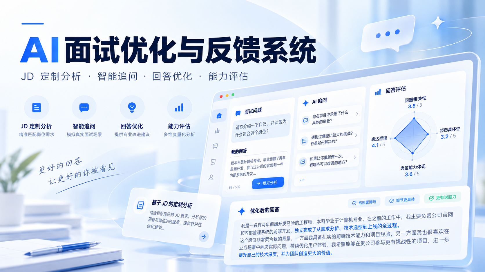

回答诊断
结合面试问题与原始回答，识别信息缺口、表达结构与岗位匹配中的关键问题。
围绕真实面试回答，通过诊断、最多三轮引导式追问、回答优化与能力评估，帮助用户梳理自身经历，形成更清晰、更有说服力的表达。

产品围绕真实表达展开，不替用户虚构经历。
结合面试问题与原始回答，识别信息缺口、表达结构与岗位匹配中的关键问题。
通过最多三轮引导式追问，帮助用户补充情境、行动与结果等真实细节。
在保留真实经历的基础上整理回答，并从多个维度提供反馈与改进方向。
隐私说明：公开产品页面显示，输入内容仅保存在当前会话，刷新后需重新开始。